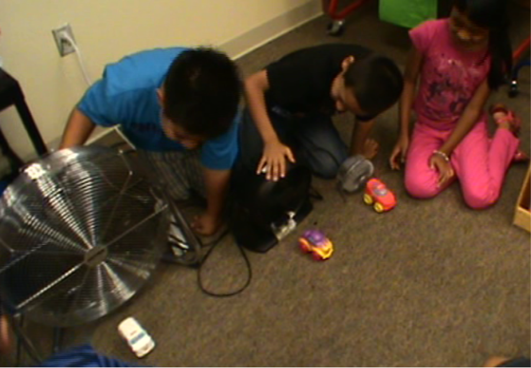
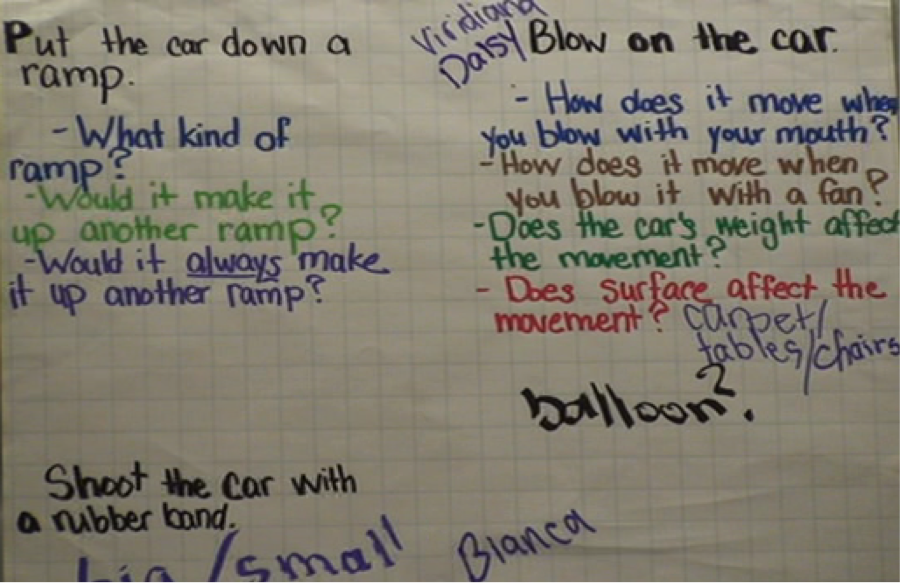
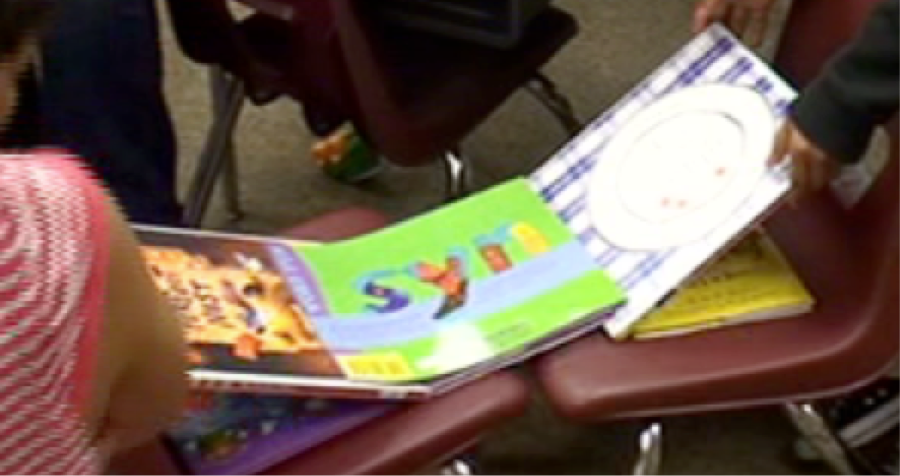

On Day 4 Sharon said she had several materials she could give her students for them to use to explore their ideas. Several kids said they wanted to think about rubber bands and Sharon she'd give them some rubber bands to use. Bianca wanted to think about balloons, and Alex wanted to think about fans. Many other ideas were expressed. Sharon distributed materials and the kids tried different things.

Kids experimenting with three different sized fans
Sharon started Day 5 by going over some ideas suggested by the class for getting the car to move and some questions they had:
Put the car down a ramp: What kind of ramp (what angle)? Would it make it up another ramp? Would it always make it up another ramp?
Blow on the car: How does it move when you blow with your mouth? How does it move when you blow it with a fan? Does the car's weight affect the movement? (Some kids talked about how the car may be too heavy.) Does the ramp surface affect movement? Sharon asked if anyone knew what 'surface' was. Jewel said, 'like if it was smooth or rough.' Sharon added carpet, tables, and chairs next to the surface question.
Use a rubber band: Kervin suggested you could attach a big rubber band to two chairs, and then move the chair legs apart to stretch the rubber band, like a slingshot. Timmy said you could use a small rubber band. Kasina suggested you could use your foot in the place of one chair. Timmy talked about how pulling back the rubber band and letting go is like a rocket.
Video Clip 1
Sharon then asked students which idea/set of questions they wanted to work on. She wrote names of students next to the idea on the butcher paper.

Sharon reminded students of a previous argument in which Fabian said the car would go up and down the ramps, and others said it couldn't without a power booster. She wanted them to explore that a little more, like try some different ramps and see if it would go up and down the ramps.
Video Clip 2
The kids then went to various places around the room to work with their materials.

Sharon spoke to the whole class, mentioning that they had found out lots of new things today. She asked who could tell her what a "discovery" is? Bianca responded that it was something they found out or learned. She asked each group to discuss one or two discoveries they had made and then have one person write them down on a small whiteboard. In one of the groups, Jewel asks the others to tell her a discovery they had made. She and Timmy talk about the number of chairs to put around the ramp.
Video Clip 3
Sharon began Day 6 by asking some students to share what they had discovered the previous day. One student said she could push the car with the air balloon. Upon clarification, her group apparently put two cars on top of each other and they moved a little when the air from the balloon was released behind them. They also put markers on top of the car, and Kevin said that the car moved faster without the markers.
Video Clip 4
Timmy spoke about his ramp (a long cardboard box), sometimes the car would move fast, sometimes slower. Sharon said that it had to do with the angle of the ramp.
Video Clip 5
Bianca talked about putting a large rubber band between two chairs, pulling it back and making the car move. Sharon then referred to some students who previously had said that the rubber band must be stretchy to work. Kervin followed up by saying that if you just used a rope tied between two chairs, it wouldn't work (it wouldn't push the car).
Video Clip 6
Sharon introduced the day's task. Using the same materials as the day before, how could students make their cars go the fastest? The students then stood up and went to their tables to explore.
Video Clip 7